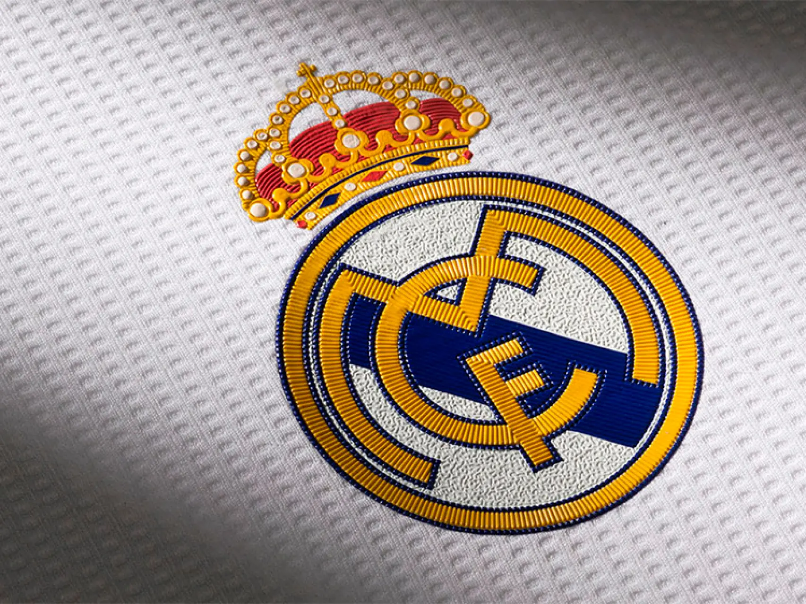

El Reial Madrid és, pel que fa a palmarès internacional, el club més llorejat del món. És conegut per, principalment, haver guanyat 15 Champions League, sent el club que més cops ha guanyat aquesta competició. A més l'11 de desembre de l'any 2000, la FIFA (Federation Internationale de Football Association) va galardonar al club amb un trofeu que el distingeix com a millor club del segle XX.
Per tot això, quan parlem del Reial Madrid parlem d'un dels millors equips en la història del futbol, motiu pel qual hem decidit fer aquesta web en la qual trobarem una mica més d'informació de la història del club, el seu palmarès, plantilla actual, etc. tot junt amb un formulari en el qual podeu donar la vostra opinió sobre el club.
